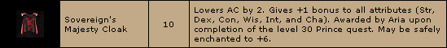
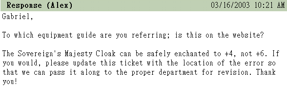

|
2003年3月16日
日本伺服器火龍兩度被擊倒
來源：Lineage Reporter Club，Dragon Hunter in Canopus(DHC)
Dragon Hunter in Canopus(DHC)是在日本伺服器中專為挑戰巨龍而創立的血盟，在3月2日及3月13日他們分別都順利擊倒遊戲中等級最高的火龍巴拉卡斯，大家一定很有與趣想知道他們的策略吧！（註：當時日本伺服器已經更新了遺忘之島，但未更新亞丁城）
3月2日火龍被擊倒圖片及戰利品：
3月13日火龍被擊倒圖片及戰利品：
君主的威嚴安定值測試
來源：美國天堂官方網站

根據美國天堂官方網站的任務道具資料顯示，君主的威嚴的安定值是6，但我們總覺得這是美國官方Copy & Paste的錯誤，因此我們嘗試在+4君主的威嚴上使用防卷，結果：
因此目前在香港伺服器中君主的威嚴的安定值仍然是4。究竟這是否真的是美國官方的錯誤，還是亞丁城更新後的改變？為此我們已經聯絡了美國官方，所得的回覆如下：

他們說君主的威嚴的安定值是4，並不是6，網頁上的資料是有錯誤的，他們會通知他們的網站部門盡快更正錯誤。
韓國測試伺服器3月14日更新內容
來源：Nue's Lineage
韓國測試伺服器更新了數個檔案，並遊戲選項中新增了背景音樂及動作音效的音量調整。 |